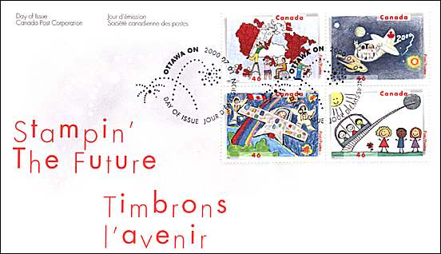
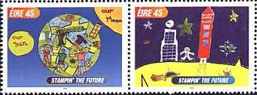
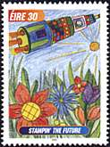
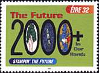
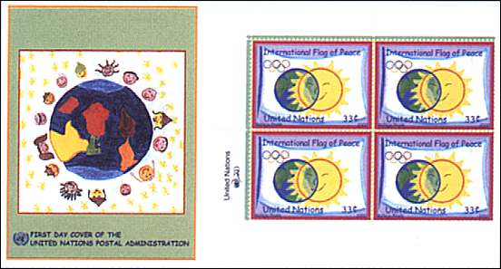

Children's Paintings Contests

Stampin the Future - 2
In celebration of the approaching 21st century, the Postal Service held Stampin' The Future, a youth stamp design contest for children 8 to 12 years of age. Kids from the U.S. and its various territories and possessions were invited to submit designs based on their visions of the 21st century. The winning designs were exhibited at the World Kids Congress, hosted by the Postal Service as part of World Stamp Expo 2000, an international philatelic exhibition held July 7-16, 2000, in Anaheim, Calif. The interest for the contest was very high, about 37'000 young participants being involved.
A child's imagination knows no boundaries, as the Canadian judges discovered while examining the mass of entries. The eight years old Canadian winner Anne Nardelli of Montreal, Quebec, explains that the astronauts (lower, left stamp) have rosy cheeks because "it means that they are happy and it could be that they are healthy.." Sarah Lutgen of Vernon, BC says that her illustrations (lower, right) reflects that "everything is new and high-tech." After the 11 years old Andrew Wright of Collingwood, Ontario, the world should become color-blind (upper, left). For Christine Weera of Edmonton, Alberta: "It takes a lot of people to build Canada". The date of issue of this set was the 1st of July 2000, the International Children Day.

The competition in Ireland attracted many entries and were adjudicated by an independent judging panel who selected the overall winner and three other prize winners. The winning designs appeared on stamps on July 7, 2000. The overall winning entry was submitted by Marguerite Nyhan, in the 11 to 14 age category, and her design is reproduced on the 30p stamp. The three other price winners are Jennifer Branagan and Diarmuid O'Ceochain, who are both in the 7 to 10 age category and whose designs are now portrayed on the se-tenant 45p stamps and Kyle Staunton from the 11 to 14 age group whose design features the 32p stamp.
 |
 |
 |
International Flag of Peace
In order to promote the ideal of peace among the young people, the UN-CyberSchool-Bus has sponsored, together with the UNPA and the Olympic Committee the Flag of Peace Project. The schoolgirls and schoolboys from the whole world were invited to send their idea of a flag of peace. The stamp above, which will be presented at the Opening Ceremony of the Olympics Games in Sidney, shows the design that received the first price. The designer is the Mateja Prunk, from Slovenia. She is 12 years old and comes from Piran, a middle age city on the Slovenian Adriatic Sea. The day of issue is September 15th, 2000.

Sources:
-
Canada's Stamp Details, No 4 - 2000
-
Faszination, UNPA, Nr. 281
-
Irish Stamps Collectors News, 3 / 00
Links: